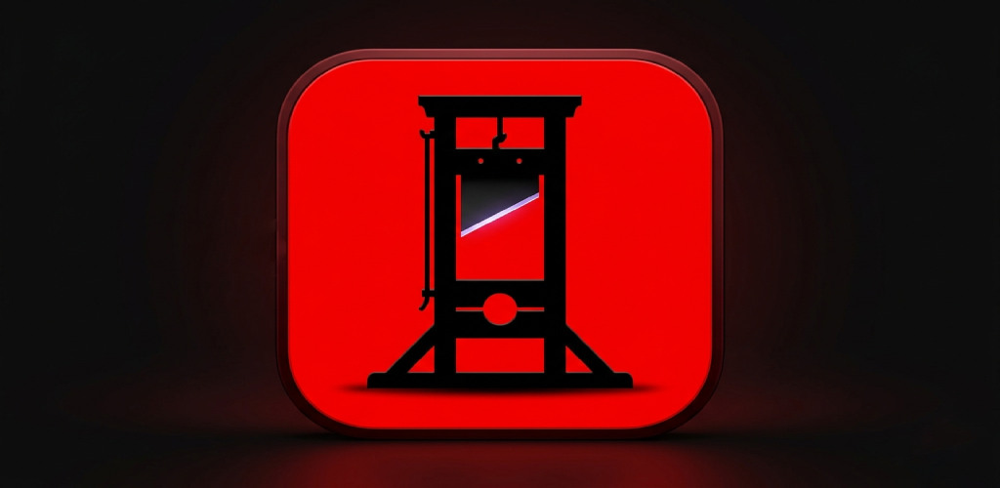

Tell it what
to cut.
It cuts.
The AI-native, non-linear video editor for Android, tablets and Chromebooks. A real multi-track timeline, keyframes, and true mp4 export — no account, no cloud required.

Multi-track editing, Sony Vegas style.
Stack as many video and audio tracks as you need. Scrub, zoom, split, trim, drag clips across tracks, group them, and drop keyframes with a bezier curve editor.
A full editor — and an AI that uses the same tools.
Trim silences, clip every shot with a face in frame, or apply a look across a whole clip. Whatever you can do by hand, you can ask the AI to do for you.
AI keep/remove
Prompt a clip — “cut the silences”, “keep only shots with a dog” — and the analyzer marks ranges to keep or remove. Batch it across many clips at once.
Multi-track timeline
Independent video and audio tracks, scrub + pinch/Ctrl-scroll zoom, split, trim, and drag clips across tracks. Group clips to move and edit them together.
Keyframes & curves
Animate opacity, scale and volume with keyframes, and shape the ease-in/ease-out with a cubic-bezier curve editor.
Filters & audio
Brightness, contrast, saturation, sepia, hue, invert, grayscale and blur — plus per-clip volume, L/R pan and normalization, with presets.
Real mp4 export
On-device rendering with Media3 Transformer physically cuts removed ranges, bakes in effects, crop and aspect, mixes audio, and saves to your gallery.
Phone, tablet & Chromebook
One adaptive layout that reflows for portrait phones and large screens, with keyboard shortcuts and mouse + Ctrl-scroll zoom. Installs without a touchscreen.
Save & resume
Store the whole project as a portable .gilt file and pick up exactly where you left off — clips, edits, keyframes and all.
Undo, copy & paste
Deep undo/redo history, plus copy-and-paste for whole clips and for the effects on a clip — so a look you dialled in transfers in one move.
Batch the boring stuff
Select many clips, write one prompt, and run the AI across all of them at once. Group clips to select, move and edit them together.
Background removal
On-device subject segmentation drops a clip's background so the layer below shows through — live in the preview and baked into export. No key, no cloud.
Captions & transcription
Turn speech into timed, grouped caption clips — on-device (Vosk) or cloud (Whisper). Edit text & font, place with crop, and burn them into the export.
Crop, scale & rotate
Pinch, drag and twist with two fingers to size, place and rotate the selected clip — video, image or text — directly on the preview.
Free by default. Powerful when you plug in a key.
Start with the free on-device analyzer — no account, no key, nothing leaves your device. Want video-native understanding? Drop in your own API key; it's stored encrypted on-device and never sent anywhere but the provider you chose.
Local
On-device silence detector. Works offline, zero configuration.
On-device vision
ML Kit face & object detection, fully offline — keep/remove by what's on screen.
Gemini
Video-native analysis for the richest keep/remove decisions.
OpenAI
Frame sampling with GPT-4o, plus Whisper for transcript-aware cuts.
Anthropic
Claude frame-sampling analysis for visual prompts.
OpenRouter
One key, many vision models via an OpenAI-compatible endpoint.
Groq
Fast Llama-vision frame analysis.
xAI · Mistral
Grok and Pixtral vision, OpenAI-compatible. Every model id is editable.
Keyboard & mouse, first class.
On a Chromebook, tablet or desktop, Guillotine drives like a proper editor — shortcuts, mouse, and Ctrl-scroll zoom. On touch, long-press a clip to range-select across tracks.
From raw footage to a saved cut.
Import
Pull in video, audio and images straight from your device. Drop them on the timeline across as many tracks as you like.
Prompt & edit
Select a clip, type something like cut the silences, and let the AI mark the cuts — or do it by hand with split, trim, filters and keyframes.
Export
Render a real mp4 on-device. It lands in Movies/Guillotine in your gallery, ready to share.
The short answers.
Is it really free?
Do I need an account or internet connection?
Is my footage uploaded anywhere?
Where do my exports go?
Movies/Guillotine in your gallery, with progress shown as it renders.Does it work on a Chromebook or tablet?
What can I control — formats, quality, aspect ratio?
Cut to the chase.
Grab the latest build and start editing. Free, open source, and runs entirely on your device.